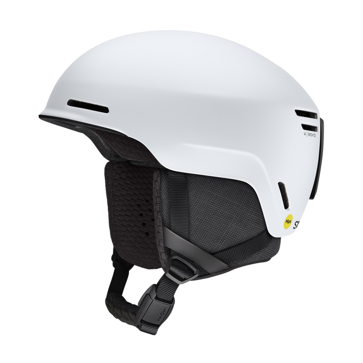

ALL-MOUNTAIN
Vantage 2 MIPS
Для тех, кто хочет управлять вентиляцией в течение дня. Верх и боковые зоны регулируются независимо.
Характеристики SmithЭКИПИРОВКА · ВАРШАВА
Два шлема, маска 4D MAG и четыре линзы для разных условий на склоне.
ЗАЩИТА
ALL-MOUNTAIN
Для тех, кто хочет управлять вентиляцией в течение дня. Верх и боковые зоны регулируются независимо.
Характеристики Smith
ПАРК И ТРАССА
Низкопрофильный шлем со съёмными амбушюрами и фиксированной вентиляцией.
Характеристики Smith| Параметр | Vantage 2 | Method Pro |
|---|---|---|
| Конструкция | Гибридная оболочка из трёх частей | In-mold |
| Защита | MIPS + полное покрытие KOROYD | MIPS + зональное покрытие KOROYD |
| Вентиляция | 40 отверстий, две регулируемые зоны | Фиксированная, 8 отверстий по спецификации Smith |
| Посадка | BOA 360 | Микрорегулировка колёсиком |
| Застёжка | Магнитная Fidlock | Магнитная |
| Совместимость с маской | AirEvac | AirEvac |

ОПТИКА
Нижний изгиб линзы BirdsEye Vision расширяет поле зрения вниз. По данным Smith, суммарный обзор на 25% шире, чем у других сферических линз бренда.
Магниты Smith MAG помогают совместить линзу с оправой, а фиксаторы удерживают её на месте. Посадка среднего размера.
Smith указывает две линзы ChromaPop, жёсткий футляр и мешочек с отделением для запасной линзы. Цвет и пара линз зависят от артикула.
Комплектация у SmithСВЕТОПРОПУСКАНИЕ
VLT показывает, сколько видимого света пропускает линза. Чем выше процент, тем светлее линза. Выберите линзу или переместите ползунок для сравнения.
Ближайшая линза — Everyday Red Mirror (25%).
ПОКУПКА
Проверено 26 ноября 2026 года. Цены без доставки. Перед покупкой проверьте остаток нужного размера и итоговую цену в магазине.
Matte White · шлем
999,99 złSportano показывает наличие отдельных размеров онлайн. Остаток в Варшаве уточняйте по размеру.
Карточка SportanoMatte Dusk · шлем
538 złBlackcomb Shop отмечает товар в наличии. На витрине цена округлена до целых злотых.
Карточка BlackcombTerra Flow 2023 · Everyday Red Mirror
1 303,20 złNartyWarszawa отмечает комплект в наличии. Название запасной линзы уточняйте у продавца.
Карточка NartyWarszawaФотографии в обзоре показывают модели в других расцветках.
БЮДЖЕТ
Выберите шлем и добавьте маску. Итог рассчитан по ценам выше.
САМОВЫВОЗ И ПРИМЕРКА
Выберите магазин, чтобы открыть его точку на карте. Перед поездкой уточните наличие нужной модели.